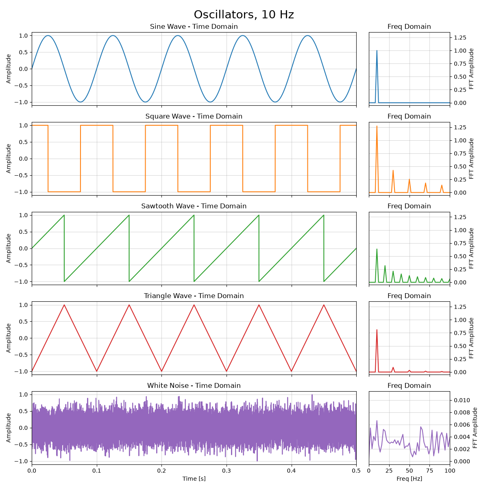
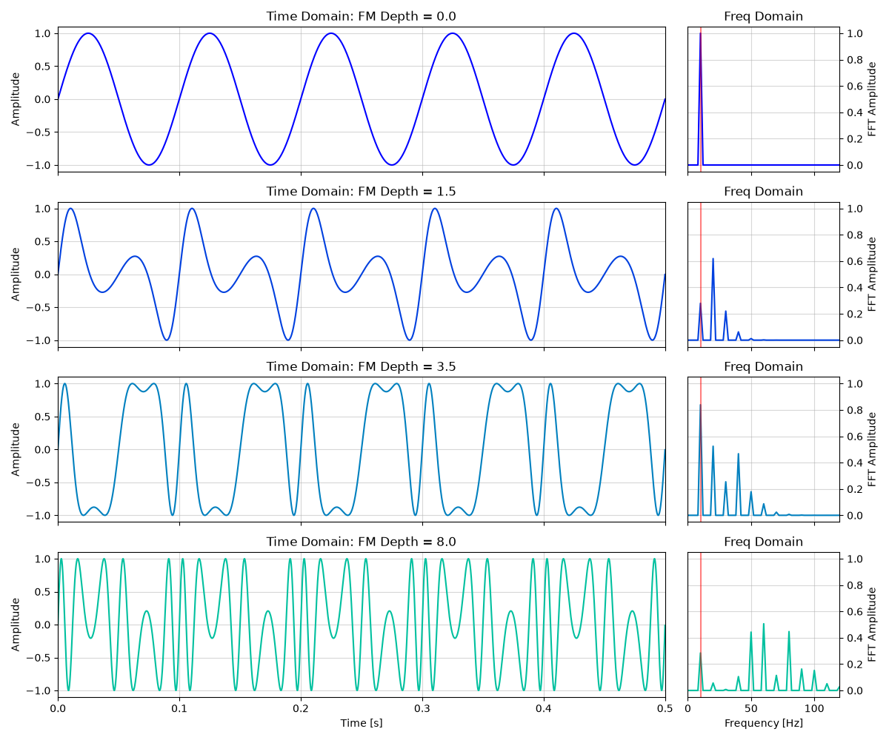
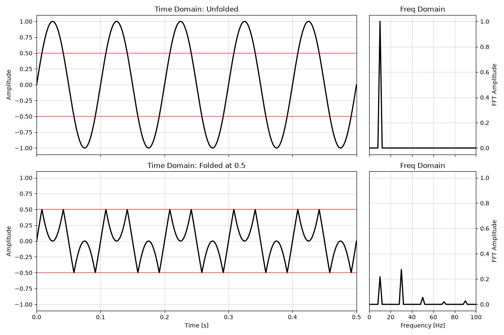
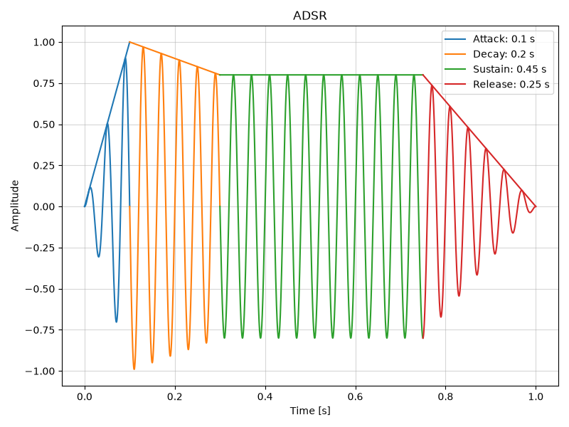
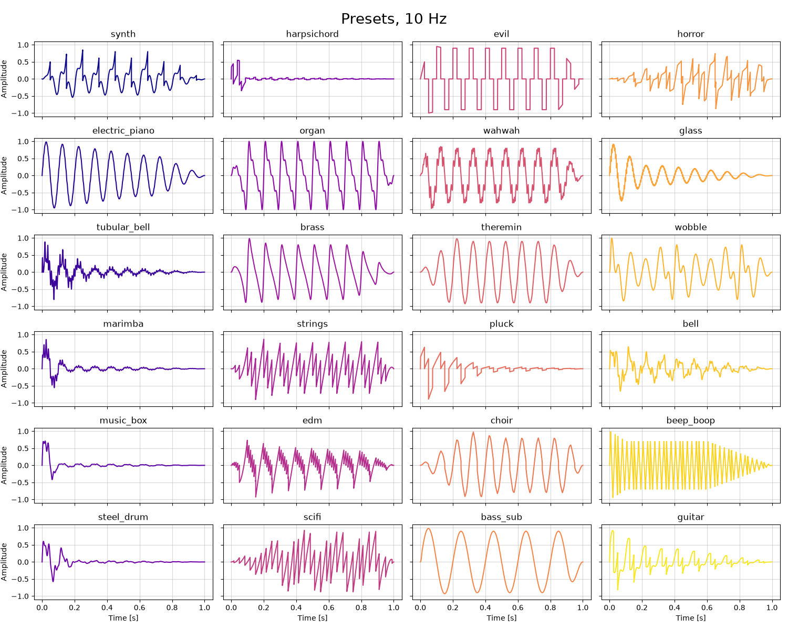

This project uses a hybrid architecture. The Python engine (using music21) handles offline score parsing and batch WAV rendering. The JavaScript engine handles real-time Digital Signal Processing using the Web Audio API, allowing for instant parameter changes and interactivity.
This synth supports up to 4 oscillators. Each oscillator can generate Sine, Square, Sawtooth, or Triangle waves, as well as White, Pink, and Brown Noise.
Each oscillator has 5 adjustable parameters:


The FM Ratio and FM Depth adjust the Frequency Modulation of the wave. In FM Synthesis, the frequency of one waveform, the carrier, is altered by a second, modulating, waveform.
In this synth, the FM synthesis is implemented as Phase Modulation:
carrier_phase = (2 * π * frequency * time) + (depth * sin(2 * π * (frequency * ratio) * time))
The FM Ratio determines the character of the new harmonics. Integer ratios will have the modulating wave finish its cycle at the same time as the carrier wave, producing harmonic sidebands. For non-integer ratios, the modulating wave drifts in and out of sync with the carrier wave, creating inharmonic sidebands. This creates a metallic or chaotic sound.
The FM Depth determines how much the carrier wave is impacted. A FM Depth of 1.0-3.0 gently pushes on the carrier wave, causing a more rich tone. At a value between 5.0 and 10.0, the wave is pushed much harder, causing it to run backwards at times. This creates a harsh, noisy, or aggressive timbre.
Instead of hard clipping the wave, which cuts off the peaks, the wavefolder uses a periodic reflection formula:
signal_out = (((signal_in + threshold) / (4 * threshold)) % 1 + 1) % 1This is similar to a piecewise function, where:
Where Vin is the input amplitude, and Vout is the output amplitude. When the amplitude of a wave exceeds the threshold, the wave is reflected back into the [-threshold, +threshold] range. This generates complex harmonics without distortion.


The ADSR Envelope consists of 5 parts:
For real-time keyboard and MIDI playback, the ADSR envelope is handled via a Web Audio GainNode. This allows for polyphony: when multiple keys are pressed, each voice independently scales its volume to prevent digital clipping, using an equal-power scaling formula.
The synthesizer has a variety of presets. All sounds are stored in a shared .json file, allowing the Python engine to render high-fidelity audio offline and the JavaScript engine to play audio in real time, using the same parameters.
When a preset is selected in the web app, the JSON data is parsed and injected directly into the Web Audio engine. This instantly updates all oscillator, FM, envelope, and wavefolder sliders in the UI to match the selected sound.

The Python engine uses music21 to parse MusicXML (.mxl), Humdrum (.krn), or RomanText (.rntxt) files.